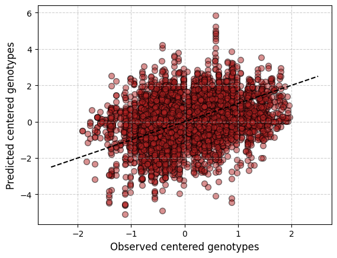

model = GeometricGO(K=1, lambd=1e-5)Geometric GO
Geometric genomic offset
The geometric genomic offset (Gain et al. 2023)
⚠️ Documentation is not complete yet!.
A geometric genomic offset model has two hyperparameters: - \(K\), the number of latent factors - \(\lambda\), a regularization . It is usually fixed to \(10^{-5}\), intended to obtain an efficient analytical solution. This usage is similar to when fitting logistic regressions where perfect separation. However, as far as I know, the effect of tuning this hyperparameter (doing cross-fold validation, for example), has not been explored yet.
GeometricGO
GeometricGO (K:int, lambd:float)
Geometric genomic offset statistic.
| Type | Details | |
|---|---|---|
| K | int | Number of latent factors |
| lambd | float | Regularization parameter |
In order to use the model we have first to initialize it:
Then, we have to fit the model, that is …
⚠️ Documentation is not complete yet!.
GeometricGO.fit
GeometricGO.fit (Y:numpy.ndarray, X:numpy.ndarray)
Fits the Geometric genomic offset model.
| Type | Details | |
|---|---|---|
| Y | ndarray | Genotype matrix (nxL) |
| X | ndarray | Environmental matrix (nxP) |
The fit() method expects as input an genotype (or allele) matrix \(\mathbf Y\) and an environmental matrix \(\mathbf X\) with as many rows as individuals (or populations). For now, let us use the causal dataset we simulated in the previous section named Simulations.
# If the package is intalled, the dataset
# can be accessed with the commented code
#from genomic_offsets import datasets
#import importlib.resources
# causal_dataset = np.load(importlib.resources.files(datasets).joinpath('causal.npz'))
causal_dataset = np.load("../genomic_offsets/datasets/causal.npz")# Read matrices
X, Xstar = causal_dataset["X"], causal_dataset["Xstar"]
Y = causal_dataset["Y"]
neglog_fitness = -np.log(causal_dataset["wstar"]+1e-5)
# Check dimensions
N, P = X.shape
assert Xstar.shape == (N, P)
assert Y.shape[0] == NLet’s split it into a train and test dataset:
rng = np.random.default_rng(1000)
indices = rng.permutation(N)
training_idx, test_idx = indices[:60], indices[60:]
X_train, X_test = X[training_idx,:], X[test_idx,:]
Xstar_train, Xstar_test = Xstar[training_idx,:], Xstar[test_idx,:]
Y_train = Y[training_idx,:]
neglog_fitness_train, neglog_fitness_test = neglog_fitness[training_idx], neglog_fitness[test_idx]Let’s fit the the LFMM model (that is the basis of the geometric genomic offset model) to the training dataset. In order to do so, we first have to remove un unvariable sites:
print(f"Shape before: {Y_train.shape}")
Y_train = Y_train[:, Y_train.var(axis=0) > 0]
print(f"Shape after: {Y_train.shape}")Shape before: (60, 219)
Shape after: (60, 204)model.fit(Y_train, X_train)The geometric genomic offset is built on top of a Latent Factor Mixed Model (LFMM) (Caye et al. 2019). When fitting the LFMM model, not only the effect sizes of the environmental variables on the genotypes are estimated, but also the latent factors. These latent factors are encoded in a matrix \(N\times L\) of rank \(K\), where \(N\) is the number of training data points.
Therefore, it is not possible to predict the optimal genotypes for any dataset other than the one used to fit the model. Still, we can visualize the residuals to identify possible biases in the model. Please, refer to the LFMM section of the documentation for more details.
GeometricGO.predict
GeometricGO.predict (X:numpy.ndarray)
Predicts the centered* optimal genotypes for the fitted environmental matrix.*
| Type | Details | |
|---|---|---|
| X | ndarray | Environmental matrix (nxP) |
| Returns | ndarray | Predicted allele frequencies |
import matplotlib.pyplot as pltcentered_Y_train = Y_train - np.mean(Y_train, axis=0)
pred_Y_train = model.predict(X_train)
fig, ax = plt.subplots()
scatter = ax.scatter(
centered_Y_train.reshape(-1),
pred_Y_train.reshape(-1),
c='firebrick', edgecolor='k',
alpha=0.5, s=50
)
ax.plot([-2.5, 2.5], [-2.5, 2.5], ls="--", c="black")
ax.set_xlabel('Observed centered genotypes', fontsize=12)
ax.set_ylabel('Predicted centered genotypes', fontsize=12)
ax.grid(True, linestyle='--', alpha=0.6)
plt.show()
Finally, we can predict the genomic offset under two different environments:
GeometricGO.genomic_offset
GeometricGO.genomic_offset (X:numpy.ndarray, Xstar:numpy.ndarray)
Calculates the genomic offset statistic.
| Type | Details | |
|---|---|---|
| X | ndarray | Environmental matrix (nxP) |
| Xstar | ndarray | Altered environmental matrix (nxP) |
| Returns | ndarray | A vector of genomic offsets (n) |
As expected, the genomic offset is zero if both environmental matrixes are identical:
model.genomic_offset(X_train, X_train)array([0., 0., 0., 0., 0., 0., 0., 0., 0., 0., 0., 0., 0., 0., 0., 0., 0.,
0., 0., 0., 0., 0., 0., 0., 0., 0., 0., 0., 0., 0., 0., 0., 0., 0.,
0., 0., 0., 0., 0., 0., 0., 0., 0., 0., 0., 0., 0., 0., 0., 0., 0.,
0., 0., 0., 0., 0., 0., 0., 0., 0.])First, let’s compute the (causal) training genomic offset with the RDA model and measure its association with the training negative logarithm of altered fitness:
from scipy.stats import pearsonrtraining_offset = model.genomic_offset(X_train, Xstar_train)
pearsonr(training_offset, neglog_fitness_train)PearsonRResult(statistic=np.float64(0.3085089208626329), pvalue=np.float64(0.01647366279612428))Finally, let’s compute the (still causal) test genomic offset (that is, a measure of decrease in fitness for all individuals we did not observe their genotypes and did not use to fit the model)
testing_offset = model.genomic_offset(X_test, Xstar_test)
testing_offsetarray([5.99358002e-02, 3.23196322e+00, 1.22147908e-03, ...,
2.02139448e+00, 3.26921400e-01, 3.59740259e-01])pearsonr(testing_offset, neglog_fitness_test)PearsonRResult(statistic=np.float64(0.3288959943860878), pvalue=np.float64(2.5105495352866084e-70))References
Caye, Kevin, Basile Jumentier, Johanna Lepeule, and Olivier François. 2019. “LFMM 2: Fast and Accurate Inference of Gene-Environment Associations in Genome-Wide Studies.” Edited by Joanna Kelley. Molecular Biology and Evolution 36 (4): 852–60. https://doi.org/10.1093/molbev/msz008.
Gain, Clément, Bénédicte Rhoné, Philippe Cubry, Israfel Salazar, Florence Forbes, Yves Vigouroux, Flora Jay, and Olivier François. 2023. “A Quantitative Theory for Genomic Offset Statistics.” Edited by Michael Rosenberg. Molecular Biology and Evolution 40 (6). https://doi.org/10.1093/molbev/msad140.